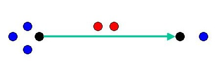
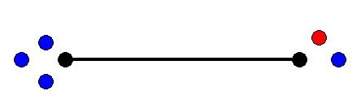
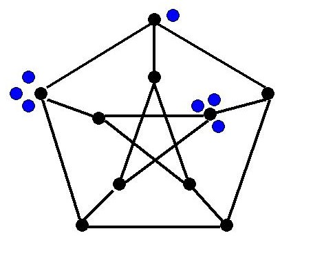

Pebbling MoveIf it is possible, one can move two pebbles from a given vertex to one of its neighbors. However, only one pebble reaches the neighbor since the other is paid as a toll along the edge.
before during after 
 
Connie & PeterPeter the Pebbler and Connie the Configurer play the following game on a graph $G$.Peter buys t very expensive pebbles and gives them to Connie . Of course, Peter doesn't want to spend too much money if he can avoid it.
Connie distributes a configuration C of pebbles onto the vertices of G and chooses a root vertex r. Peter will win the game if he can place a pebble on r after a sequence of pebbling moves; otherwise, Connie wins the game.
SolvabilityIn the case that Peter wins we say that C is r-solvable (otherwise r-unsolvable). If C is r-solvable for every r then C is called solvable.
solvable unsolvable 
Pebbling NumberThe pebbling number of G is denoted $\pi(G)$ and equals the fewest number of pebbles Peter must buy in order to guarantee victory.That is, if Peter buys pi(G) pebbles then every possible configuration of Connie's is solvable, while if Peter buys pi(G)-1 pebbles then Connie can find a configuration that is r-unsolvable for some r.
First FactsBreadth Lower Bound. pi(G) >= N(G), where N(G) denotes the number of vertices of G.Otherwise, Connie will place at most one pebble on every vertex except the root.Graphs whose pebbling number equals N(G) are said to be of Class 0.
Cut Lower Bound. pi(G) > N(G), when G contains a cut vertex x.Otherwise, let A and B be two components of G-x, with v in A and r in B. Then Connie will place 3 pebbles on v and 1 pebble on every other vertex except x and r.Thus Class 0 graphs are 2-connected.
Depth Lower Bound. pi(G) >= 2diam(G), where diam(G) denotes the diameter of G.Otherwise, Connie will place all the pebbles on a vertex at distance diam(G) from the root.Pigeonhole Upper Bound. pi(G) <= (N(G)-1)(2diam(G)-1) + 1.Otherwise, Connie cannot avoid placing at least 2diam(G) pebbles on some vertex, from which any root can be solved.
First ResultsCliques. pi(Kn) = n, where Kn denotes the complete graph on n vertices.This follows from the breadth and pigeonhole facts above.Paths. pi(Pn) = 2n-1, where Pn denotes the path on n vertices.This follows from the depth fact above and induction.Petersen. pi(P) = 10, where P denotes the Petersen graph.Give it a try!
Real ResultsCyclesLet Cn denote the cycle on n vertices. Then Pachter, Snevily, and Voxman proved the following theorem in [PSV].For k >= 1, f(C2k) = 2k and f(C2k+1) = 2floor[(2k+1)/3] + 1.
TreesFirst we define a maximum path partition Q of a tree T. Consider a partition Q = (Q1, .., Qm) of the edges of T into paths Q1, .., Qm, written so that qi >= qi+1, where qi = |Qi|. Any choice of root vertex r in T induces an orientation of the edges of T and thus also on each path Qi.The orientation on Qi determines a root ri of Qi which may or may not be an endpoint of Qi. If ri is an endpoint of Qi then we say that Qi is well r-directed. We call Q an r-path partition of T if each path Qi is well r-directed, and a path partition if it is an r-path partition for some r.
The path partition Q majorizes another, Q', if its sequence of path lengths majorizes that of the other, that is, if qj > qj', where j = min {i : qi <> qi'}. A path (resp. r-path) partition of T is maximum (resp. r-maximum) if no other path (resp. r-path) partition majorizes it.
Let (q1, .., qm) be the nonincreasing sequence of path lengths of a maximum partition Q = (Q1, .., Qm) of a tree T. Then Chung proved the following theorem in [Chu].
For Q as above, we have f(T) = (sumi=1..m 2qi) - m + 1.
CubesLet Qd be the d-dimensional cube. Chung invented the 2-Pebbling Property in order to prove the following theorem in [Chu].pi(Qd) = 2d.
Sharper Upper BoundsA set S of vertices is a dominating set if every vertex not in S is adjacent to some vertex in S. The domination number of a graph G is denoted dom(G). Chan and Godbole [ChGo] made the following improvements on the Pigeonhole Upper Bound (here we write d = diam(G)).1. pi(G) <= (n-d)(2d-1) + 1.
2. pi(G) <= {n + floor[(n-1)/d] - 1}2d-1 - n + 2.
3. pi(G) <= {n + 2dom(G)}2d-1 - dom(G) + 1.
PracticeK2,b) = b+2. BooksLemke GraphDefine the Lemke graph L by the picture below. Prove that pi(L) = 8.Complete Bipartite Graphs
 Define the complete bipartite graph Ka,b, having vertices {u1, .., ua} union {v1, .., vb} and edges uivj for every i and j. For example, the star on n vertices is Sn = K1,n-1. Prove that pi(
Define the complete bipartite graph Ka,b, having vertices {u1, .., ua} union {v1, .., vb} and edges uivj for every i and j. For example, the star on n vertices is Sn = K1,n-1. Prove that pi(
Define the book Bp,q = Sp+1 x Pq (see cartesian product), having p pages, q vertices per page, q vertices on the binding. Prove that pi(B3,3) = 18.Subset Levels
For 0 < k < d, let Sk(d) be the collection of all k-subsets of {1, 2, .., d}. For 0 < i < j < d, define Qdi,j to be the bipartite graph with vertex parts Si(d) and Sj(d), having edges EF when E subset F. Prove that pi(Q41,2) = 16.
{kind=link}
{kind=link}
{kind=link}
{kind=link}